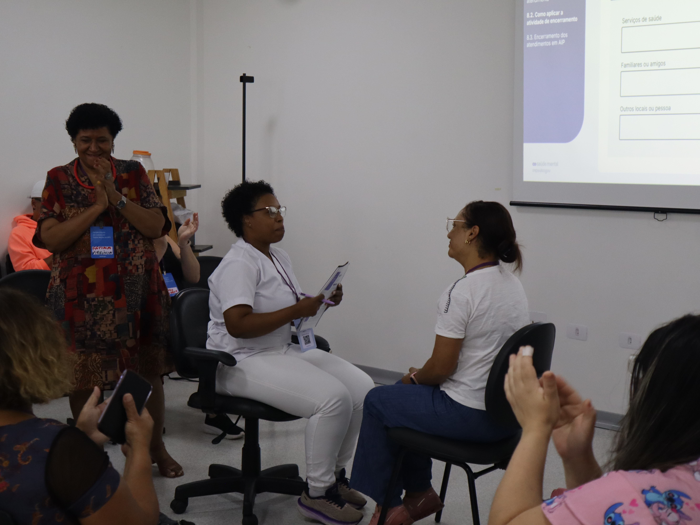

InstitutionImpulsoGov
Period2025, 2026
Scale3 roles · 30+ documents analyzed
FunctionService redesign
RoleUX Research and Product Vision
PROAPS (Mental Health Capacity-Building Program for Primary Care)
From one-size-fits-all to three tracks that fit the daily routine of the public health system.
Mental health training for primary care, the entry point of Brazil's public health system (SUS), was identical for community health workers, nurses and family doctors, ignoring that each role has a completely different scope, contact time and specialist backup. I ran the diagnosis with all three roles and redesigned the training around the minimum team the system actually has in each clinic.

§ Problem
One course for three realities
The community health worker makes 8 to 12 home visits a day with no training in active listening. The nurse coordinates the team and uses screening tools "seen on the internet". The doctor has 15-minute appointments and no specialist backup. A generic training fit none of the three routines.
§ My role
Diagnosis + service redesign
I analyzed responses to an existing institutional survey and more than 30 internal documents from previous research, reconciling those learnings with the public health system's scope-of-practice guidelines and with the barriers and enablers found on the ground. Using Jobs to be Done, co-built with health professionals across 3 workshops I facilitated, I designed a track for each professional role. I documented the diagnosis, turned it into an implementation roadmap and coordinated the rollout.
§ Real constraint
The system's minimum team
No new specialists could be hired. Each track had to fit the minimum team every primary care clinic already has, community health worker, nurse and family doctor, and could not eat into the doctor's already scarce 15-minute appointments. It was also designed for scale: training every professional would require heavy customization, impossible to replicate in other regions.
One track becomes three, by role
FIG. · redesigned model
Decision pointCHWNurseFamily doctor
§ What was implemented
Three tracks, three formats, one shared protocol.
Community health workers: 4 days in person with weekly mentoring for 3 months, focused on screening during home visits. Nurses: a 5-day hybrid format with weekly mentoring for 5-6 months, including collaborative care and Singular Therapeutic Plans (PTS). Family doctors: 2 live remote sessions focused on risk stratification and psychotropic medication management, backed by the specialist network.
Each track uses internationally validated screening tools for depression and anxiety (Patient Health Questionnaire-9, PHQ-9, and Generalized Anxiety Disorder-7, GAD-7), adapted to the depth of each role's practice.
30+
Institutional documents analyzed
95,8%
Want mental health training
26,5%
In collaborative care, the lowest rate across roles
3
Training tracks redesigned by role
"
We community health workers are the ones who give patients this support, talking and listening. It would be essential to have more knowledge to handle these situations.
CHW · field research, PROAPS
§ Outcome: program running for real
Multiple regions, consistent reduction in depressive symptoms
1
Public health region running this pilot
2000+
Training sessions delivered
↓
Consistent reduction in depressive symptoms (PHQ-9) from screening to the 4th session, in every region
§ Also from the diagnosis
Train everyone without overloading anyone
Spread training across the three roles instead of concentrating it in one, so no single professional is overloaded and each role's barriers and enablers are put to use.
By territory
Select professionals by territory, following primary care's coverage logic, rather than by individual interest or convenience.
Staggering the clinics
Roll out clinic by clinic, in stages, so specialist backup and access to mental health care are viable in every region.
§ Methodology
Interpersonal Counselling (IPC)
An adaptation of Interpersonal Psychotherapy for primary care. It doesn't train therapists; it equips non-specialists to offer brief, effective support for mild to moderate emotional distress. 20 hours of in-person training followed by 3 to 4 months of supervised practice with ongoing mentoring.
§ Learning
Support has to vary by role
What works for psychologists and social workers doesn't work for nursing technicians or community health workers. Dropout during supervised practice varies widely across roles, which confirms that protected time, a private room and management support are preconditions for implementation, not nice-to-haves.
§ Decision and trade-off
Leaving some roles out was the choice that made the program scalable.
The most generous version of the program would train everyone in the clinic. Pharmacists, receptionists and other non-clinical staff were left out: these roles face an intense, uninterrupted flow of patients, which makes releasing them for training unfeasible and weakens continuity of care, which is what the track needs to sustain.
The cost is real: front-desk reception still has no formal training. The payoff is a model that can be replicated in other regions instead of customized clinic by clinic.
§ How I got there
Criterion: who sustains continuity
Scope of practicePublic health system guidelines on what each role is allowed to do.
Contact timeHow much time each professional spends with the same person over the course of care.
ReplicabilityTraining everyone would require customization impossible to repeat in another region.